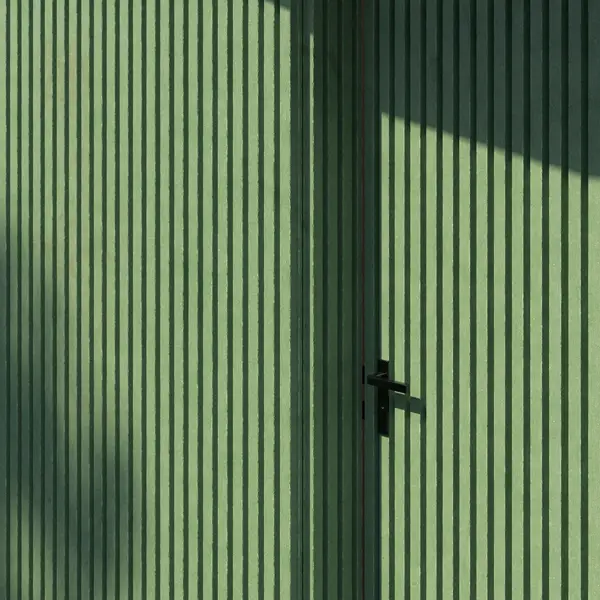
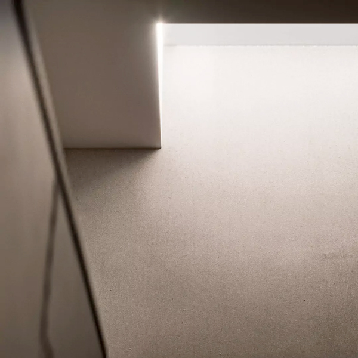

(studio)
Stable
1. An architectural visualization studio specialized in interior and exterior computer generated imagery and interactive experiences.
synonyms:
archviz, 3D studio, immersive, BIM
(featured project)
Plano Alto
A video is worth a thousand images. Plano Alto offers a cinematic and interactive approach to architectural visualization in Hanover.
GO TO PROJECT →
GO TO PROJECT →
Walkthrough
1. An interactive and dynamic form of spatial exploration.
2. When still images don't do justice to the whole building.
The sensorial activation of being inside one of Plano Alto's apartment units.
GO TO PROJECT →
GO TO PROJECT →
Panoramas
1. A 360 degree interactive image surrounding the viewer for a better understanding of the space.
A panoramic view brings continuity and sense of space to an otherwise segmented representation. It instigates exploration and immersiveness.
GO TO PROJECT →
GO TO PROJECT →
Fundamentals
1. The essential principles every one of our projects is built upon.
Realism

Envision your project - interior and exterior - with ultra realistic renders. Choose materials and furniture and make well informed decisions before building or renovating.
GO TO PROJECT →
GO TO PROJECT →
Relatability

Stable's ultimate goal is for viewers to picture themselves habitating our creations. Realism alone is not enough, a space needs to feel lived and personal.
GO TO PROJECT →
GO TO PROJECT →
High quality models and textures

High poly, precise meshes and high quality textures are standard. Furniture models are sourced from the manufacturers to guarantee an identical representation of the real product.
GO TO PROJECT →
GO TO PROJECT →
Attention to detail

Attention to detail is paramount, it blurs the line between CGI and reality. From subtle surface imperfections to the accurate local flora, no detail is left unattended.
GET IN TOUCH →
GET IN TOUCH →





